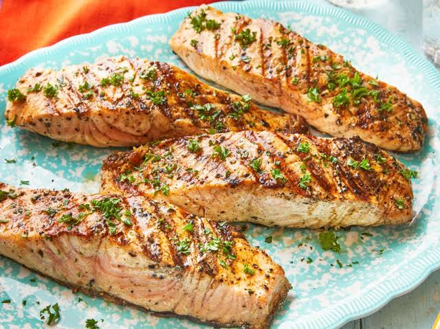

Honey garlic glazed salmon is a quick, flavorful dinner that combines sweet, savory, and slightly tangy flavors in every bite. The salmon develops a lightly caramelized exterior while remaining flaky and moist inside, thanks to a simple glaze made with honey, garlic, soy sauce, and fresh lemon juice. It's an elegant meal that comes together in under 30 minutes.
Serve this salmon alongside steamed rice, roasted asparagus, broccoli, or a fresh cucumber salad for a balanced and satisfying dinner. Garnish with sliced green onions and sesame seeds for added texture and a fresh finishing touch that complements the rich flavor of the fish.